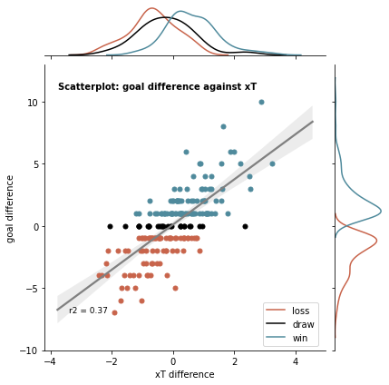
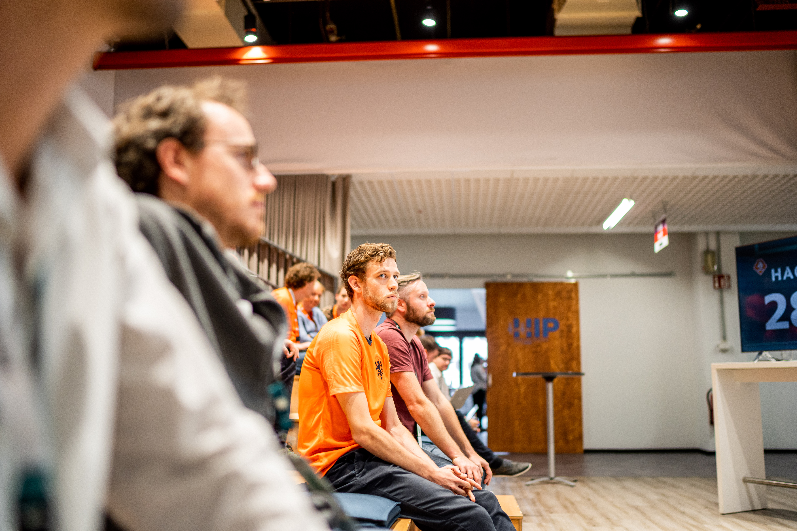

Welcome! I hope you are enjoying your day so far. My name is Milan and I live in Amsterdam. I am a MSc. Artificial Intelligence graduate, having an affinity with sports, data analytics, coding and solving all kinds of puzzles.
I would describe myself as an enthusiastic, assertive and trustworthy person with strong competencies on both analytical and social level.
Being focused and dedicated to becoming an expert in sport/data analytics over the coming years.
It is an amazing opportunity to combine multiple passions of mine.

During this Hackathon project, I work together with a video analist of football club Dynamo Dresden. Our goal was to insightfully cluster crosses given different situations.
To tackle this problem, I implemented a Expected Threat model and additionally created features that would describe the defensive and offensive structures of the teams in the penalty area.
These features were created based on the tracking data of over 60 matches. The final product is a dashboard on which football professionals can interact
to get better insights in which type of crosses are more effective in a given situation.

For this project I compared Expected Threat (xT) and Expected Goals (xG) in the game of football. Both being predictive models to value shots (xG) and ball moving actions (xT).
I first implemented both predictive models on a publicly available dataset (Statsbomb).
Followed by comparing the two models using linear regression, showing the difference between both models in respect to winning football games.

During this Hackathon me and my teammate (an video analyst) had one weekend to come up with an innovative product for evaluating moments of
transitioning to offense.
Based on the coaches principles, we created 10 different features based on the positional data of the match, to cluster transitioning moment into four clusters using K-means clustering.
Based on the clusters we were able to validate our metric, on how good it could cluster bad, decent and good moments in a match.
In this study, I propose a model for the prediction of losing and preserving ball possession using random forests, gradient boosting machines and support vector machines as implementedalgorithms.
Data of a whole season of a professional football league, consisting of tracking, events, and possession data. A framework consisting of six categories to create 43 features to use for the classification is proposed.
The results of this study show that predicting preserving and losing ball possession using the proposed features is a hard task. Of the chosen supervised learning algorithms, Random Forest Classifier performed best on this task.
The feature "length of the attacking team" is the best predictor for preserving and losing ball possession.